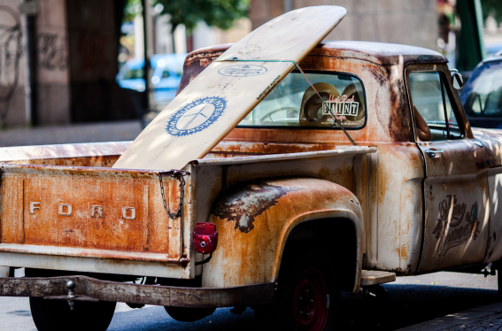
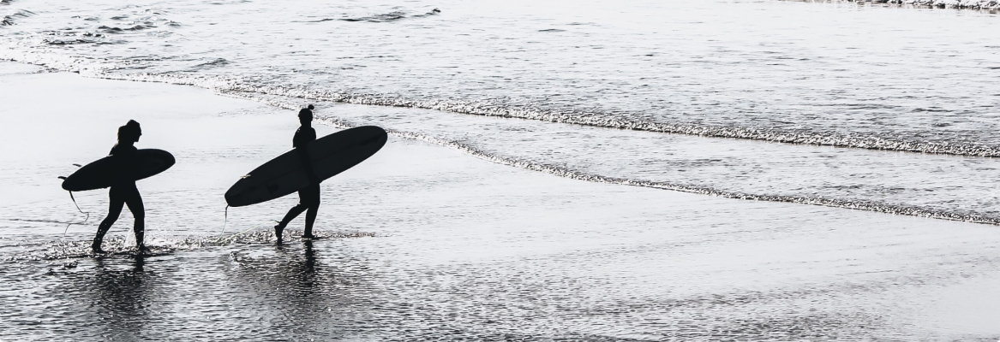

A origem do surfe é bastante incerta, porém indícios remetem o seu início a algumas ilhas do Pacífico, especificamente as da Polinésia central. A prática teria sido derivada da necessidade de sobrevivência: como uma das técnicas de sobrevivência era a pesca, os nativos utilizavam-se de um barco bastante tradicional. Para voltar à terra firme, eles deslizariam sobre as ondas para retornar com maior rapidez. Essa prática teria se perpetuado até o Havaí, permanecendo restrita entre a realeza local. No contexto havaiano o surfe era praticado como ritual de oferenda, apresentando relações diretas com agradecimento pelos coqueiros e seus frutos.
O modo pelo qual o surfe era praticado se dava de acordo com a estrutura hierárquica da sociedade: a posição em pé era permitida apenas aos reis e seus filhos, que surfavam em pranchas de aproximadamente dois metros de comprimento. Outras pessoas vinculadas à realeza podiam praticar o surfe, desde que em pranchas menores e que nunca ficassem em pé na prancha. Ao restante dos nativos era proibida a prática.
Assim, o surfe ficou restrito às ilhas havaianas até o início do século XX. Sua divulgação se deu a partir do ex-nadador olímpico havaiano Kahanamoku, que sempre levava sua prancha para os lugares em que tinha competição.
O ingresso do surfe no Brasil se deu por meio dos trabalhadores de companhias aéreas que, ao entrar em contato com o surfe fora do país, trouxeram o esporte para nosso país. Iniciando pela praia paulista de Santos e logo caindo nas graças dos cariocas, o surfe rapidamente se espalhou pelo litoral brasileiro. As primeiras pranchas utilizadas eram de madeira, até que em meados da década de 1960, passaram a ser utilizadas as pranchas de fibra de vidro.
Os benefícios do surfe são os mesmos de qualquer atividade aeróbica, mas com um diferencial delicioso: o contato com a natureza. Além de ser um excelente exercício cardiorrespiratório, o surfe trabalha todos os grupos musculares, além de propiciar o desenvolvimento da coordenação motora e do equilíbrio do praticante.
Entre 1970 e o início de 1980, os surfistas havaianos Randy Rarick e Fred Hemmings passaram a realizar diferentes eventos de surf em todo o mundo, constituindo os primeiros campeonatos mundiais da categoria e desenvolvendo um sistema de ranking internacional. Sua organização, International Professional Surfrs (IPS), tornou-se nesse período a principal associação mundial do surf profissional. De 1983 a 2014 evoluiu-se para Associação de Profissionais de Surf (ASP), proporcionando um controle de esporte e em 2015, entra em cena a World Surf League (WSL) para ajudar a transformar o ASP em um órgão centralizado ainda mais potente, supervisionando as principais áreas e campeonatos mundiais masculinos e femininos.
Já no Brasil, a primeira organização voltada ao esporte foi a Associação de Surf do Rio de Janeiro, fundada em 1965. No entanto, o órgão máximo dos esportes, a Confederação Brasileira de Desportos, só reconheceu o surf como esporte no ano de 1988, após a realização do primeiro campeonato brasileiro masculino (1987), o feminino ocorreu apenas dez anos mais tarde.
Nossa escola de surf teve origem com a ideia de juntar diversão, paixão pelo esporte e conhecimento aquedo. Esse sonho teve início em 2005 ao perceber que, apesar de possuirmos muitas praias adequadas para o surf na baixada santista, não possuíamos uma quantidade considerável de especialistas no ramo para que a orientação correta ocorresse.
Apenas em 2007 concretizou-se através de doações adquiridas por amantes das pranchas com o intuito sempre de manter viva tal forma de apreciar a natureza e entender como sintonizar com a mesma.